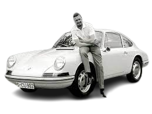
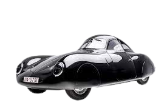
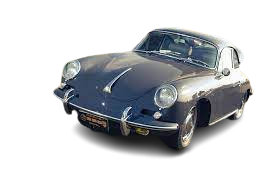

Notícias da Porsche
Ferdinand Porsche
Os primeiros carros da Porsche foram projetados por Ferdinand Porsche, um engenheiro alemão que fundou sua própria empresa em 1931. Antes de fundar a Porsche, Ferdinand Porsche trabalhou como engenheiro-chefe da Mercedes-Benz e também projetou o lendário Volkswagen Fusca.
O primeiro carro da Porsche foi o "Porsche 64", um modelo de corrida que foi desenvolvido em 1939 para participar da "Berlin-Rome Race", uma corrida de longa distância que foi cancelada devido ao início da Segunda Guerra Mundial. O Porsche 64 tinha um motor boxer de quatro cilindros e 1,1 litro que gerava uma potência de 50 cavalos e uma velocidade máxima de 160 km/h.
Porsche 64
Após a guerra, a Porsche começou a produzir carros em série, começando com o Porsche 356 em 1948. O 356 era um carro esportivo com um motor boxer de quatro cilindros e 1,1 litro que gerava uma potência de 40 cavalos e uma velocidade máxima de 140 km/h. O modelo foi um sucesso imediato, tanto nas pistas quanto nas vendas, e estabeleceu a Porsche como uma das marcas mais importantes do mundo automotivo.
Desde então, a Porsche tem produzido alguns dos carros esportivos mais icônicos da história, incluindo o lendário Porsche 911, que foi lançado em 1963 e ainda é produzido até hoje. A marca também é conhecida por seus carros de corrida, que já venceram inúmeras competições, incluindo as 24 Horas de Le Mans. A Porsche continua a inovar e desenvolver novos modelos de carros esportivos, mantendo sua reputação como uma das marcas mais respeitadas e admiradas do mundo automotivo.